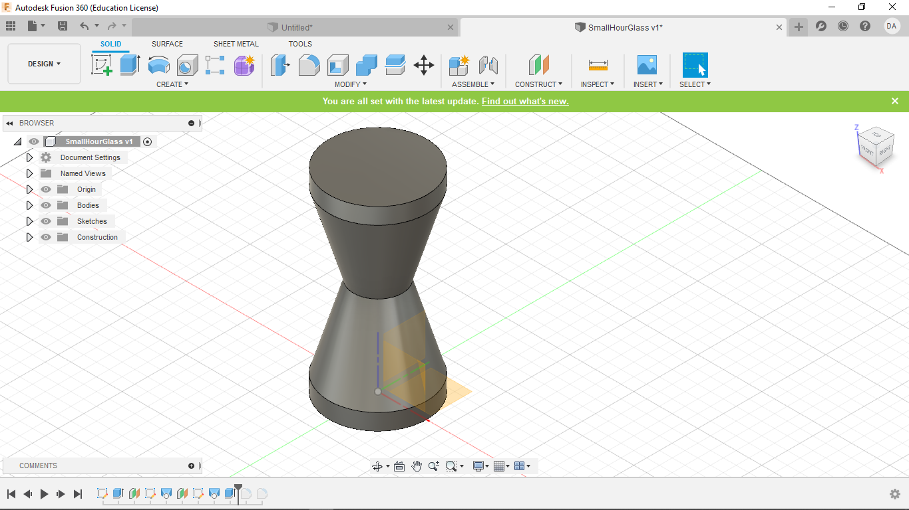

Week Six
Slicer Mini
This week was the first of a two part assignment. We modeled a shape of our own, then used a convert it into 3D slices which were then lazer cut and assembled.
1. Creating the Hour Glass
For this weeks Assignment I created a 3D hour glass. I started my project in Fusion 360. As always, I created a new document and started a new sketch on the x,y plane. From there I made a circle and extruded it as such.
Then I created an offset plane from the top of my raised disk. I projected the center of that plane onto the origin and made a smaller circle.
From there I used a loft command to connect the two planes
Next I made another offset plane the same distence away as the last time. Once again I projected the origin of this plane onto the origin of the x,y plane. I then made another circle centered at the origin of the same side as the original. Finally I lofted between my two most recent planes.
Finally, I extruded the top plane by the same amount as my initial extrution. This gave me my final hour glass shape. Small adjustments to propotion were made from there, and the final product is seen below.
2. Using Fusion Slicer
After exporting my Fusion360 file, I opened it in an associated software called FusionSlicer.
I then double checked the project size and set the material to cardboard, for which I had already preset the size and thickness to that which we were provided for this project.
Then I selected the "interlocked slices" option as shown below and let it generate my cuts.
Then I set the number of slices on each axis to 6, as was assigned. At this point, I will point out that my Slicer was showing multiple errors. That is because some of my pieces have to be slid in at an angle, and the system is not smart enough to figure that out. This will be shown below.
I then pushed the "get plans" button in the lower left, and downloaded the slices to my computer as EPS files.
3. Nesting in Illustrator
From there I opened my files in Illustrator. I also created a new file of the exact size of our full cardboard segments

Then I went in an ungrouped all of the my files that were uploaded from Slicer, and deleted the outline.
Next I moved all of my largest slice segments onto my new document, since I already had an idea of how they would fit, and this was followed by the smallest segments which fit between as seen below. I also moved all the other segments over and put them to the side.
Making small adjustments. I fit as the rest of the slice segments into the least abount of space possible, interlocking them as seen below.
I then created two boxes to close of the space that I was using so that usable scraps would be created when my project was printed, saving time for the next person.
After that I seperated the text and the slices (using the "select -> same -> stroke color" command) and move the text onto another layer. After that I also set the stroke weight of everything to .01 mm to prep it for cutting.
4. Cutting and Assembly
Now, I never recommend printing right as the building closes, becuase with so little time you are unable take pictures of the printing processes, and this is displeasing to the great, powerful, and wise, Madison. I unfortuantely, did not take my own advice, so... let's just skip to the construction shall we. If you've forgotten how to print, go look at Week 2
First sort all of your slices by shape and size. (P.S. I'm sorry about the horrible lighting, what are you gonna do when the power goes out)
Then interlock the largest sections as such.
Then slide the second largest segments in, paying careful attention to which direction they slide in. I also had to slide these in at an angle, it's a bit tight but it works.
From there, slide the smallest segments into place. You can see the scale of the final project below.
5. Design Files
My Design files for week 6 can be found here.